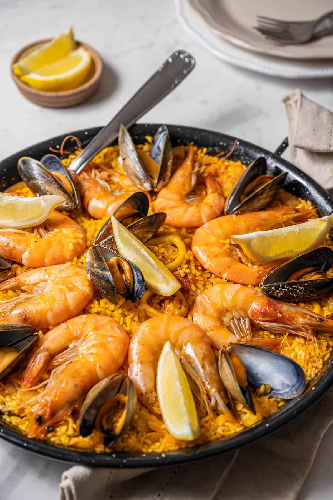

Paella

Description
Paella is a traditional Spanish rice dish, consisting usually of rice, seafood, and a tomato paste.
Ingredients
- Aborio rice
- Tomato paste
- 31/40 Shrimp
- Chicken
- Chicken Stock
Steps
- 1. Cook rice in a thin-bottomed pan using stock.
- 2. Add tomato paste.
- 3. Place chicken on top and shrimp around the edges.
- 4. Bake in a 350 degree oven until shrimp is cooked through and a nice crust has formed.